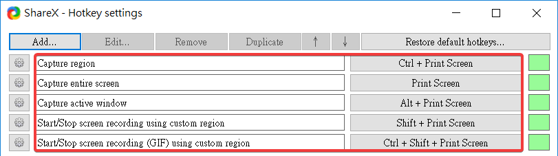
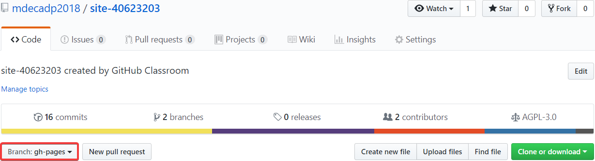
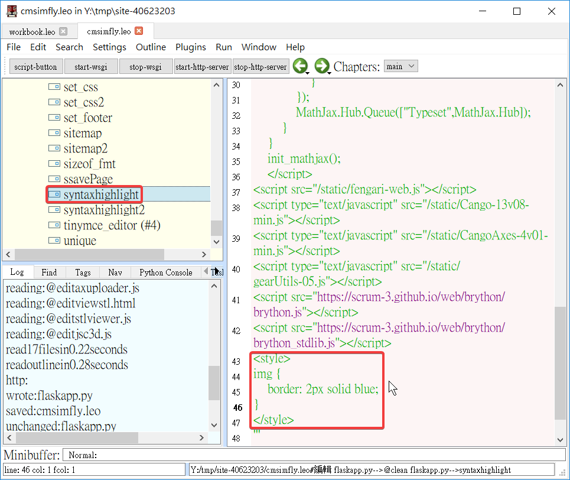

Week2
ShareX setting path and microphone
ShareX 設定路徑及麥克風

ShareX screenshots and video features
ShareX 截圖及錄影的功能

Zoomit can use Ctrl + 1 to zoom in on the screen, select the screen, highlight the highlight with a brush, or use ShareX's Ctrl + PrintScreen to capture the image.
Zoomit 可以利用 Ctrl + 1 以 Zoomit 的功能放大螢幕，選擇畫面,，以畫筆標示重點，也可以結合 ShareX 的 Ctrl + PrintScreen 擷取圖片
Receive storage：
領取倉儲：
1. First pick up the warehouse from the teacher：mde.tw > i > Week1 > https://classroom.github.com/a/fGqXU9kO > @mdecadp2018 > https://github.com/mdecadp2018/site-40623203
先跟老師領取倉儲 mde.tw > i > Week1 > https://classroom.github.com/a/fGqXU9kO > @mdecadp2018 > https://github.com/mdecadp2018/site-40623203
2. After the collection is completed, you can start to maintain the blog.
領取完畢後，就可以開始進行維護網誌
3. Set the default branch to gh-pages
將內定 branch 設為 gh-pages

4. After git clone the job to proximal, before the Week9, master the progress, shoot the internship video every week, and put the content and experience of the textbook into your personal website, newsletter and blog.
將作業倉儲 git clone 至近端後，在 Week9 前，自行掌握進度，每週拍攝操作實習影片，將教材內容與使用心得放入個人的網站、簡報與網誌中
To add a colored box to the image, open cmsimfly.leo > syntaxhighlight in LEO to adjust the line thickness and color.
若要在圖片加上有顏色的框，在 LEO 開啟 cmsimfly.leo > syntaxhighlight 調整框線粗細及顏色

Experience1 << Previous Next >> Teaching Video2